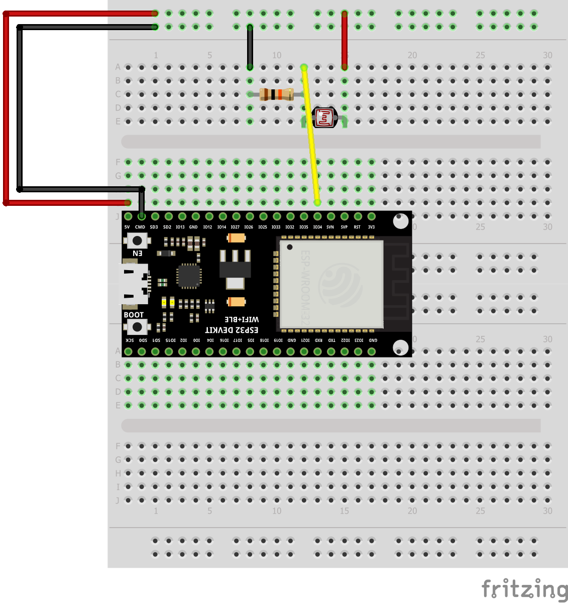
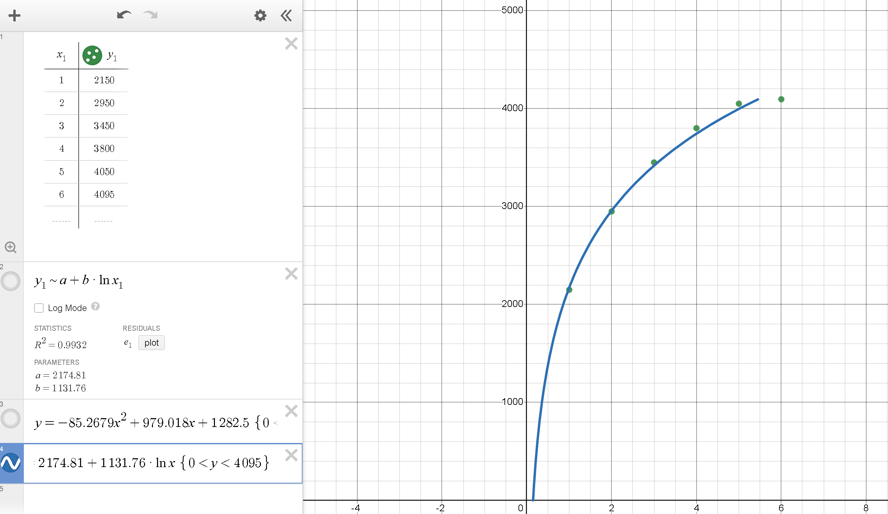
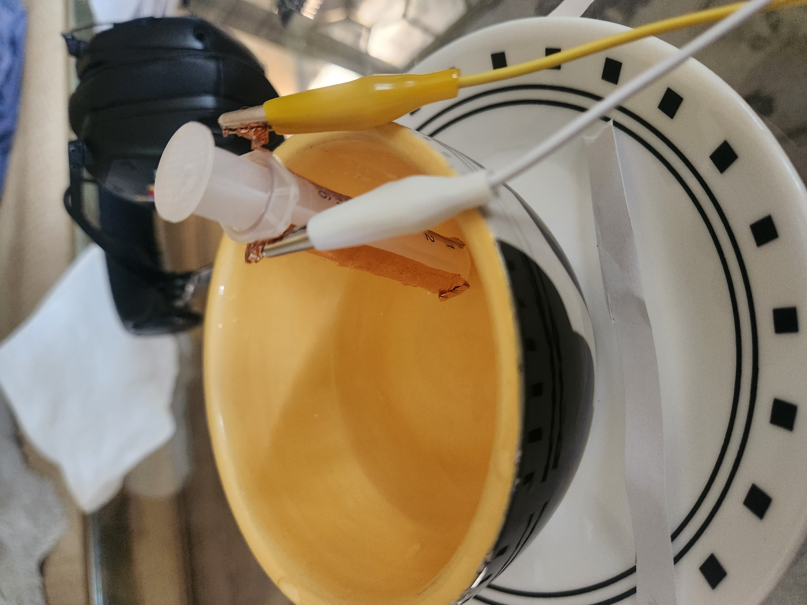
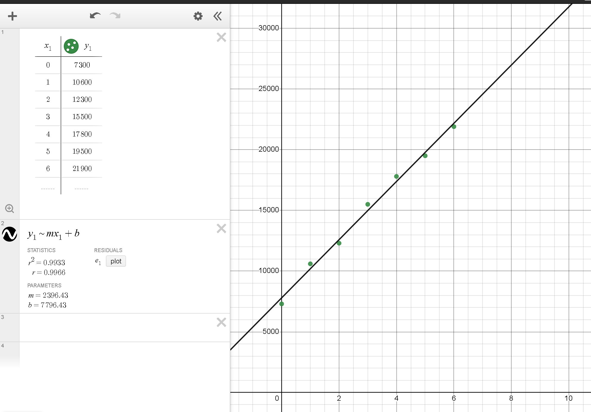
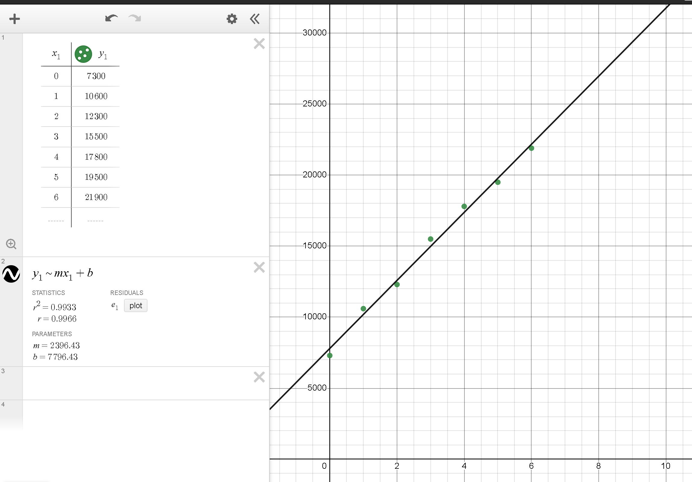

Photoresistor calibration:
For my choice of standard, prapackaged sensor, I chose photoresistor. In order to calibrate the photoresistor, I used my phone's flashlight, which has 6 different level settings for brightness. By holding my phone at the same distance everytime, i can calibrate the sensor to read what level of brightness my phone is on. Here's the circuit and the code I used for calibration, with the circuit consisting of an ESP32 Devkit V1 board, a 10K ohm resistor, and a photoresistor.
Fig. 6.1: Schematic of the circuit or reading the light sesnor
const int numReadings = 100;
int readings[numReadings]; // the readings from the analog input
int readIndex = 0; // the index of the current reading
int total = 0; // the running total
int average = 0; // the average
int inputPin = 34; //Setting pin for resistor
void setup() {
// initialize serial communication with computer:
Serial.begin(9600);
// initialize all the readings to 0:
for (int thisReading = 0; thisReading < numReadings; thisReading++) {
readings[thisReading] = 0;
}
}
void loop() {
// subtract the last reading:
total = total - readings[readIndex];
// read from the sensor:
readings[readIndex] = analogRead(inputPin);
// add the reading to the total:
total = total + readings[readIndex];
// advance to the next position in the array:
readIndex = readIndex + 1;
// if we're at the end of the array...
if (readIndex >= numReadings) {
// ...wrap around to the beginning:
readIndex = 0;
}
// calculate the average:
average = total / numReadings;
// send it to the computer as ASCII digits
Serial.println(average);
delay(100); // delay in between reads for stability
}
Fig. 6.2: Code used for reading photoresistor
Using this code, I found the readings for every value of brightness on my phone's flashlight. I then plotted them in Desmos, resulting in a graph that looked like this:
Fig. 6.3: Plot of averaged analogRead() values
By using this graph and the derived line of best fit, I created an inverse equation to map the photoresistor values to the light levels on my phone. Here is the added code used to do that:
float level = pow(M_E,((average-2174.81)/1131.76));
Serial.println(round(level));
Fig. 6.4: Code and equation used to map values onto phone light levels
Water Level Sensor
Using a plastic syringe and some copper tape, I created a device to measure the amount of water in the syringe in mL. This circuit consisted of just an Arduino board with copper tape attached through alligator clips to two GPIO pins for Tx-Rx sensing.
Fig. 6.5: Water level sensor
I then used some code to use Tx-rx sensing. This program effectively sends pulses of voltage to the Tx pin, connected to some form of electrode (in this case the copper tape), and then measure the signal recieved on the Rx pin, connected to a recieving electrode (also copper tape). The water inside the syringe effects these values based on how much is in the syringe.
long result; //variable for the result of the tx_rx measurement.
int analog_pin = A3;
int tx_pin = 4;
void setup() {
pinMode(tx_pin, OUTPUT); //Pin 4 provides the voltage step
Serial.begin(9600);
}
void loop() {
int top = 40000;
int bottom = 0;
result = tx_rx();
Serial.println(result);
Serial.print(",");
Serial.println(top);
Serial.print(",");
delay(100);
}
long tx_rx(){ // Function to execute rx_tx algorithm and return a value
// that depends on coupling of two electrodes.
// Value returned is a long integer.
int read_high;
int read_low;
int diff;
long int sum;
int N_samples = 100; // Number of samples to take. Larger number slows it down, but reduces scatter.
sum = 0;
for (int i = 0; i < N_samples; i++){
digitalWrite(tx_pin,HIGH); // Step the voltage high on conductor 1.
read_high = analogRead(analog_pin); // Measure response of conductor 2.
delayMicroseconds(100); // Delay to reach steady state.
digitalWrite(tx_pin,LOW); // Step the voltage to zero on conductor 1.
read_low = analogRead(analog_pin); // Measure response of conductor 2.
diff = read_high - read_low; // desired answer is the difference between high and low.
sum += diff; // Sums up N_samples of these measurements.
}
return sum;
} // End of tx_rx function.
Fig. 6.6: Water Level sensor code
I then used the Serial Plotter to observe the values returned by this program depending on different amoutns of water in the syringe. I then plotted these values in Desmos as before, formed a curve of best fit, and then used the inverse of that curve to find a function that accurately maps out the sensing values to water levels. In this case, it was a linear function.
 

Fig. 6.7: Plotter and graph of best fit
Now with the values being converted into water levels, the sensor was complete!